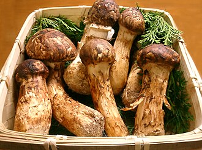

まつたけ（松茸）の生産量 都道府県ランキング
全15県の順位と、とれた量
まつたけが日本でいちばん多くとれるのは長野県です。6 tで、全国（15 t）の44%を占めます。

| 順位 | 都道府県 | 生産量 | 全国に占める割合 |
|---|---|---|---|
| 1位 | 長野県 | 6 t | 44% |
| 2位 | 岩手県 | 5 t | 31% |
| 3位 | 和歌山県 | 1 t | 6.8% |
| 4位 | 宮城県 | 1 t | 4.1% |
| 5位 | 岡山県 | 1 t | 4.1% |
| 6位 | 秋田県 | 0 t | 1.4% |
| 7位 | 広島県 | 0 t | 1.4% |
| 8位 | 山形県 | 0 t | 0.7% |
| 9位 | 福島県 | 0 t | 0.7% |
| 10位 | 石川県 | 0 t | 0.7% |
| 11位 | 岐阜県 | 0 t | 0.7% |
| 12位 | 京都府 | 0 t | 0.7% |
| 13位 | 兵庫県 | 0 t | 0.7% |
| 14位 | 徳島県 | 0 t | 0.7% |
| 15位 | 高知県 | 0 t | 0.7% |
この数字について
- 分類：きのこの仲間
- 全国の生産量：15 t
- この数字が表すもの：生産量（とれた重さ）
- 調査：特用林産基礎資料 令和7年
- 15県分を調査（調査していない県は順位に入りません）
まつたけの生産量について、よくある質問
- まつたけの生産量が日本一の都道府県はどこですか？
- 長野県です。特用林産基礎資料（令和7年）で6 tでした。
- まつたけの生産量ランキング2位・3位はどこですか？
- 2位は岩手県（5 t）、3位は和歌山県（1 t）です。
- まつたけの生産量ランキング4位・5位はどこですか？
- 4位は宮城県（1 t）、5位は岡山県（1 t）です。まつたけの全15県の順位は上の表のとおりです。
- まつたけの全国の生産量はどれくらいですか？
- 15 t（令和7年）です。